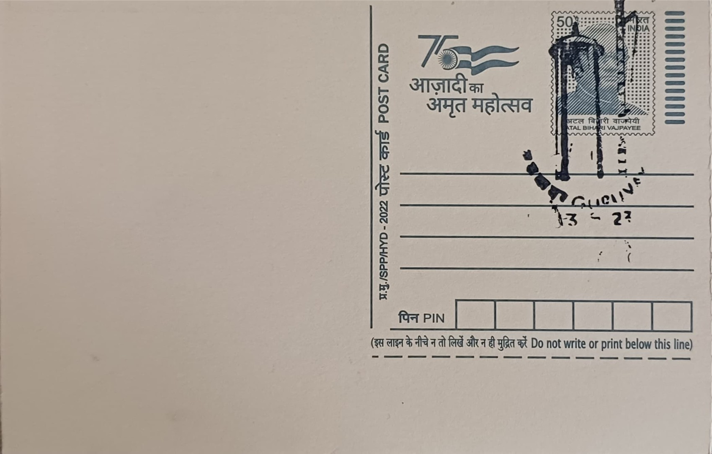

Bell and Flag Mast in Guruvayur Sri Krishna Temple
ഗുരുവായൂർ ശ്രീകൃഷ്ണ ക്ഷേത്രത്തിലെ മണിയും കൊടിമരവും


Guruvayur traces its name to a legend in which the sage Brihaspati, the guru of the Devas, and Vayu, the god of wind, are said to have together installed the deity at this site after the submergence of Dwaraka, giving the town its name as a fusion of Guru and Vayu. A related local tradition holds that a divine ringing of bells, or mani kilukkam, was heard near a banyan tree where a Brahmin was told of the Lord's arrival, and the surrounding area came to be known as Thirumanikkara in consequence. While the deity's sanctity is linked in popular belief to the Dwapara Yuga and the Krishna avatar, the temple's documented history becomes traceable mainly from the medieval period, when Kerala's ruling houses and devotees expanded it into the major shrine it is today.
As one of the foremost Krishna temples in India, Guruvayur occupies a distinct place among Vaishnavite pilgrimage centres, popularly styled the Dwaraka of the South for its perceived continuity with the submerged city associated with Krishna. The temple's twin ritual anchors, the kodimaram or flag mast and the ceremonial bells at its sanctum doors, are not incidental fixtures but central to how its festivals are structured, since no major utsavam can formally begin without the kodiyettu, or flag-hoisting, performed at the mast. This structural role gives the bell-and-flag-mast ensemble a significance beyond ornament, marking it as the ritual threshold through which the temple's festival calendar, including the widely attended Guruvayur Ekadasi, is set in motion each year.
Temple records indicate that the kodimaram was encased in gold during a period of prosperity that also saw the construction of the eastern and western gopurams, with the central shrine itself rebuilt in 1638 under the patronage of successive local rulers and devotee communities. The present dwajasthambam stands roughly seventy feet tall and is sheathed in gold plating, making it one of the more visually prominent gilded flagstaffs among Kerala's major temples. The sanctum doors nearby are similarly fitted with gold-plated bars, and devotional accounts describe over a hundred small bells, cast in silver and gilded, suspended around the shrine, their sound forming part of the temple's daily ritual atmosphere alongside the deity's own understated, four-armed stone image.
The temple's resilience through repeated calamity forms one of its most noted historical threads: Dutch forces plundered and set fire to parts of the complex in 1716, with reconstruction following by 1747, and in 1789 troops under Tipu Sultan reportedly set the temple ablaze again, an episode popular tradition says was checked by a sudden, unseasonal downpour that spared the shrine. A further and better-documented fire struck on 30 November 1970, destroying the chuttambalam and the vilakkumatam enclosures on three sides over some five hours, yet leaving the sreekovil, the deity, and the subsidiary shrines of Ganapati, Ayyappan, and Devi untouched, even as its historic mural paintings suffered extensive damage in the blaze.
The murals damaged in the 1970 fire were restored through the 1980s under traditional technique, a project that led to the founding of the Institute of Mural Painting at Guruvayur in 1989 to keep the specialised skills needed for such conservation alive. The temple as a whole, including the bell and flag mast, is today administered by the Guruvayur Devaswom Managing Committee, a statutory body that oversees its rituals, festivals, and upkeep, and under whose care the dwajasthambam continues to be the fixed point from which each major festival at the shrine is formally launched.
| Date of Introduction | November 12, 1988 |
|---|---|
| Address | Sub Postmaster, |
| Guruvayur SO, | |
| Thrissur (dt.), Kerala - 680101. |